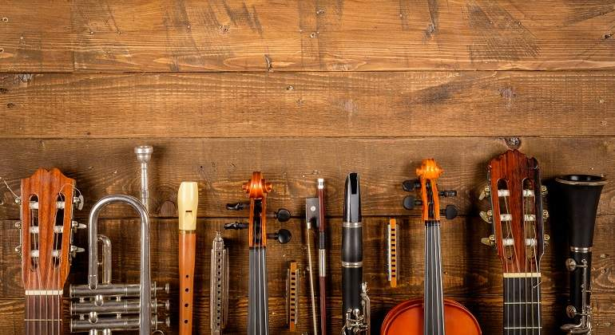

BIENVENIDOS A LA MEJOR WEB
SOBRE MÚSICA DE ESPAÑA

¿Que és la "Música"?
"La Música es, según la definición tradicional del término, el arte
de crear y organizar sonidos y silencios respetando los principios
fundamentales de la melodía, la armonía y el ritmo, mediante la intervención
de complejos procesos psicoanímicos. El concepto
de música ha ido
evolucionando desde su origen en la Antigua Grecia, en que se reunía sin
distinción la poesía, la música y
la danza como arte unitario."

"La música es la banda sonora de la vida"
--Dick Clark--
"La música es la mediadora entre el mundo espiritual y el de los sentidos"
--Ludwig van Beethoven--
¿Que és MusicManía?
MusicManía és una página creada por Alex Ferrús y Jordi Navarro dedicada puramente
a la información y el aprendizaje dentro del maravilloso mundo de la cultura, la creación
y la interpretación de la música. Aqui, encontrarás instrumentos y un poco de su historia,
videos de bandas populares en la Comunidad Valenciana y algunas de sus tradiciones
donde la música es imprescindible y está presente en todo momento.